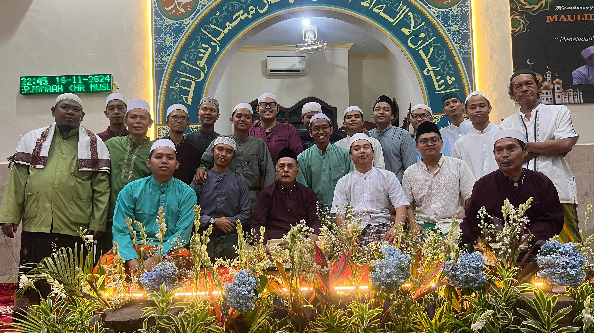

Selamat Datang di Majelis Malam Jum'at

Tentang Kami
Majelis Ta'lim Malam Jum'at adalah tempat berkumpulnya para jamaah untuk memperdalam ilmu agama, bersilaturahmi, dan berbagi kebaikan bersama.
Kegiatan Rutin
- Pengajian Rutin Setiap Minggu
- Majelis Dzikir Setiap Jum'at
- Pembacaan Yasin, Tahlil, Ratib & Maulid AL-Barzanji
Kontak Kami
Alamat: Jl. Murdai 1 Gg.Kubur No. 21, Cempaka Putih Barat, Jakarta Pusat
Telepon:
Email: